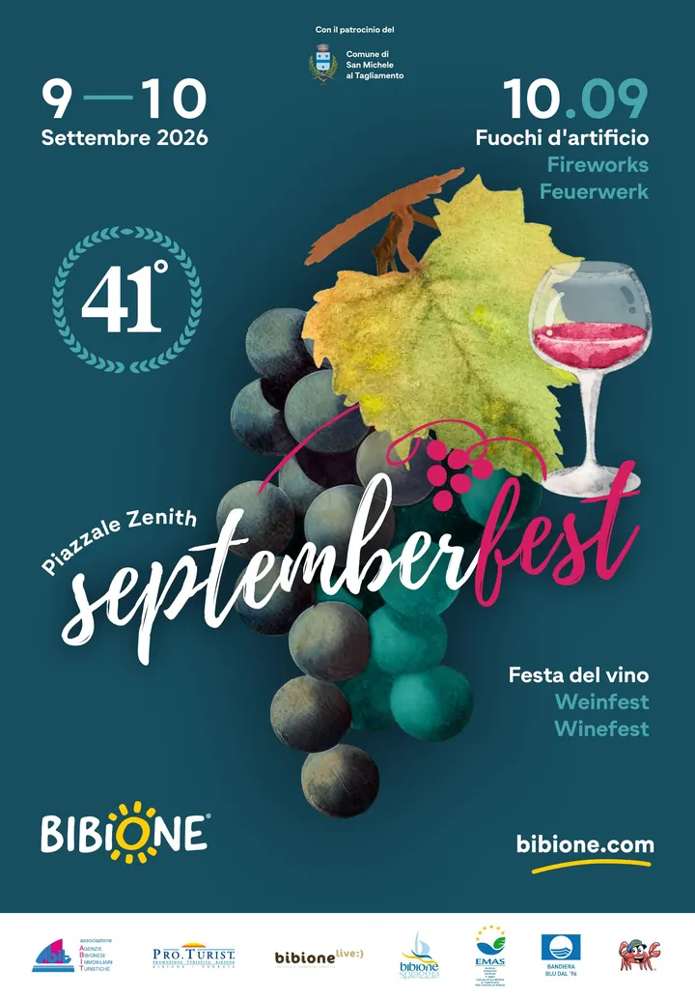

da mer 9 set a gio 10 set · dalle 18:00
Septemberfest – Festa dell’uva e del vino
Quarantunesima festa dell’uva e del vino con degustazioni, prodotti del territorio, musica dal vivo e spettacolo finale.
 Indicazioni
Indicazioni
- Costi e prenotazioni
- Accesso libero · Nessuna prenotazione indicata
- Programma
- Programma confermato. Date e sede confermate; la pagina presenta alcune etichette giornaliere residue da ricontrollare.
- In caso di maltempo
- Nessun piano alternativo pubblicato per gli appuntamenti all’aperto.
- Note
- Linea urbana 1 prolungata fino alle 00:30.
L’EVENTO
Descrizione completa
Septemberfest celebra la fine dell’estate e la vendemmia con degustazioni di vini, formaggi DOP e IGP e prodotti del territorio. La quarantunesima edizione occupa Piazzale Zenith per due serate.
Il programma prevede musica dal vivo e DJ set; il gran finale comprende lo spettacolo pirotecnico. Il portale ufficiale di Bibione indica il 9 e 10 settembre, anche se alcune parti testuali della pagina conservano etichette di giorni non coerenti: le date numeriche sono quelle da seguire.
Per l’evento viene prolungato il servizio della linea urbana 1 fino alle 00:30. È consigliabile utilizzare il trasporto pubblico o raggiungere Piazzale Zenith a piedi.
IL PROGRAMMA
Programma e orari
Appuntamenti raccolti dalle fonti elencate. Dove manca un orario, non è ancora disponibile in questa scheda.
Mercoledì 9 settembre
- Apertura stand e degustazioni
- Musica dal vivo in serata
Giovedì 10 settembre
- Stand enogastronomici
- DJ set e live band
- Gran finale con spettacolo pirotecnico
INFORMAZIONI UTILI
Prima di partire
- Linea urbana 1 prolungata fino alle 00:30.
- Degustazioni, musica e spettacolo pirotecnico finale.
- Contatti: Informazioni tramite Bibione.com
ORGANIZZAZIONE